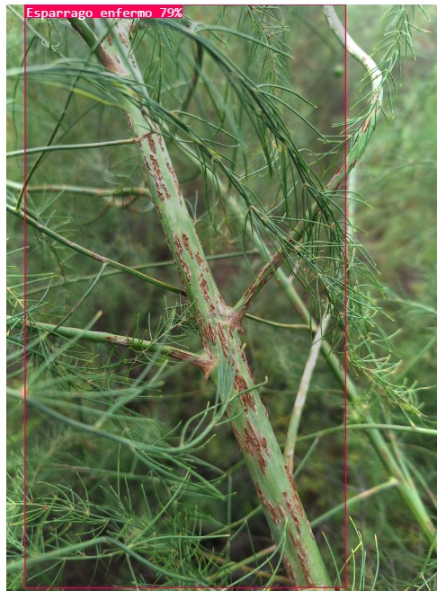
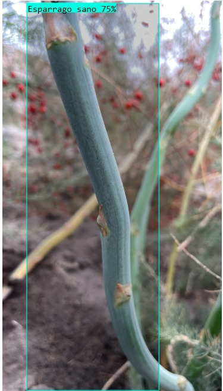
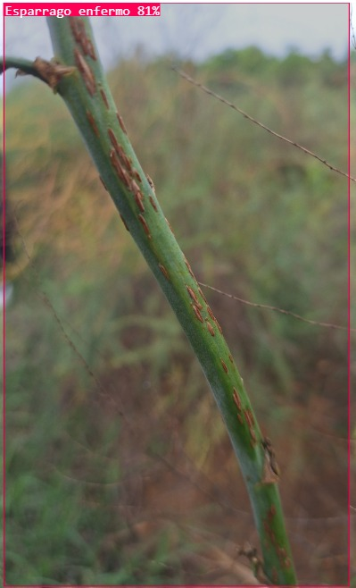
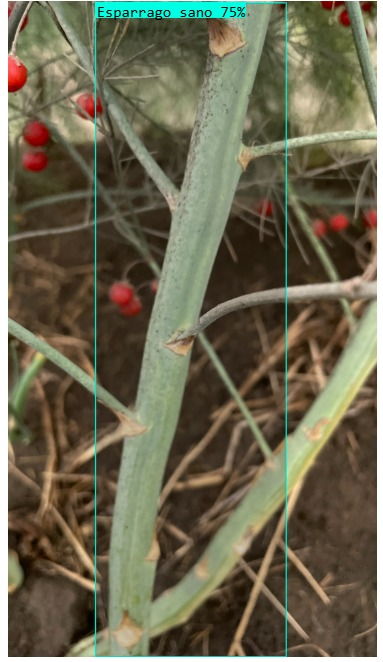
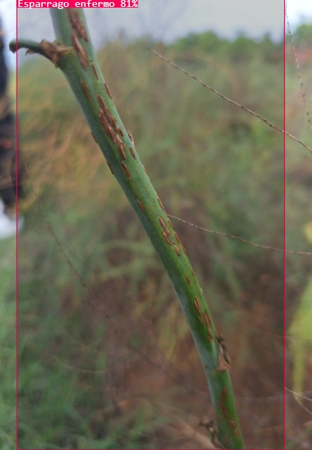
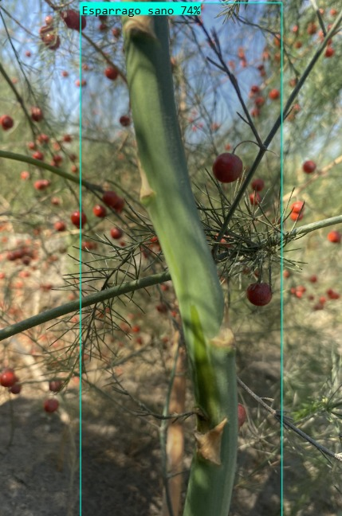

RoyaScan es una solución basada en visión artificial e inteligencia artificial que permite detectar de forma temprana la roya en cultivos como el del espárrago, optimizando el control y reduciendo pérdidas económicas. Nuestra tecnología busca mejorar las decisiones agronómicas mediante la automatización del diagnóstico visual.
RoyaScan es un sistema inteligente desarrollado por estudiantes de la Universidad César Vallejo que utiliza modelos de aprendizaje profundo para reconocer la presencia de roya en los tallos de espárrago. Se trata de una herramienta portátil, precisa y fácil de utilizar, diseñada para agricultores, técnicos agrarios y centros de investigación.
¿Cómo funciona?
Captura de imagen en campo o desde galería.
Procesamiento con modelo YOLOv8 previamente entrenado.
Identificación de patrones visuales asociados a roya.
Clasificación del estado de salud del tallo.
Presentación de resultados e indicadores.
Beneficios
Prevención de la propagación de la enfermedad.
Reducción de costos por tratamientos innecesarios.
Mayor rendimiento por cosecha protegida.
Uso educativo en prácticas agrícolas modernas.
Plataforma adaptable a nuevas enfermedades.
Galería de Resultados
Dtección del modelo:






Preguntas Frecuentes
¿Qué cultivos reconoce RoyaScan?
Por ahora está optimizado para espárrago, pero el sistema puede entrenarse con otras imágenes para detectar enfermedades en otros cultivos como cacao o plátano.
¿Necesita conexión a internet?
No, el modelo no necesita conexión a internet para que pueda funcionar. Esto beneficia a las zonas sin conectividad.
¿Por qué es importante?
El modelo es importante debido al aporte que hace a los agricultores, la disminución de pérdidas de cultivo es una de las razones más importantes por la que se desarrolló.
¿Cómo se entrena el modelo?
Utilizando YOLOv8 y una base de datos de imágenes etiquetadas manualmente con signos de roya. El modelo aprende a reconocer patrones característicos de forma automática.